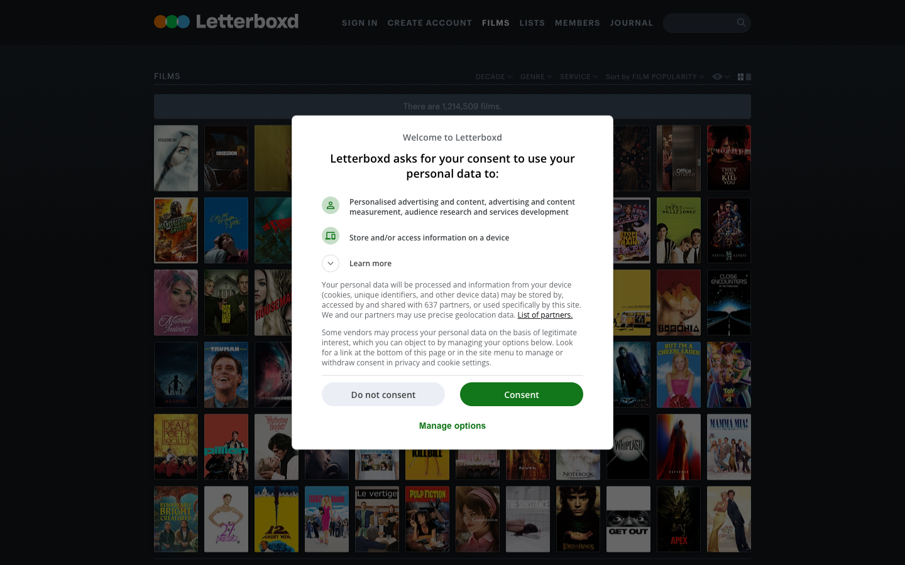
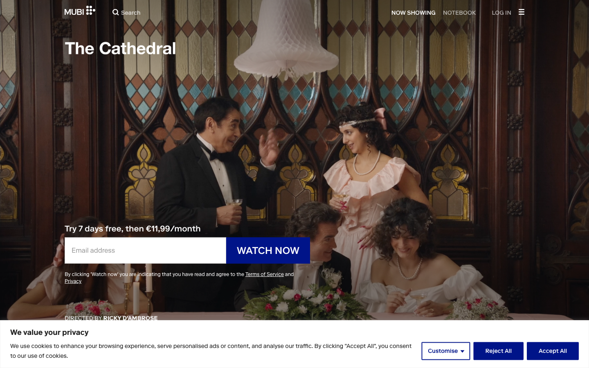
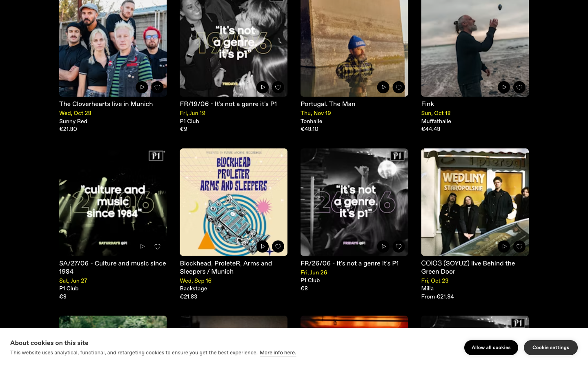
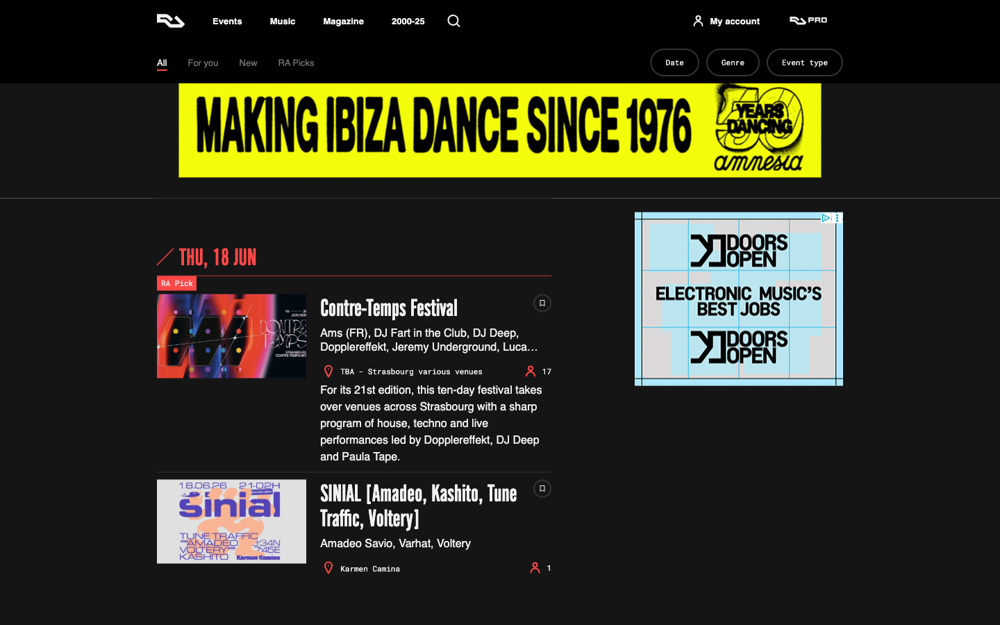
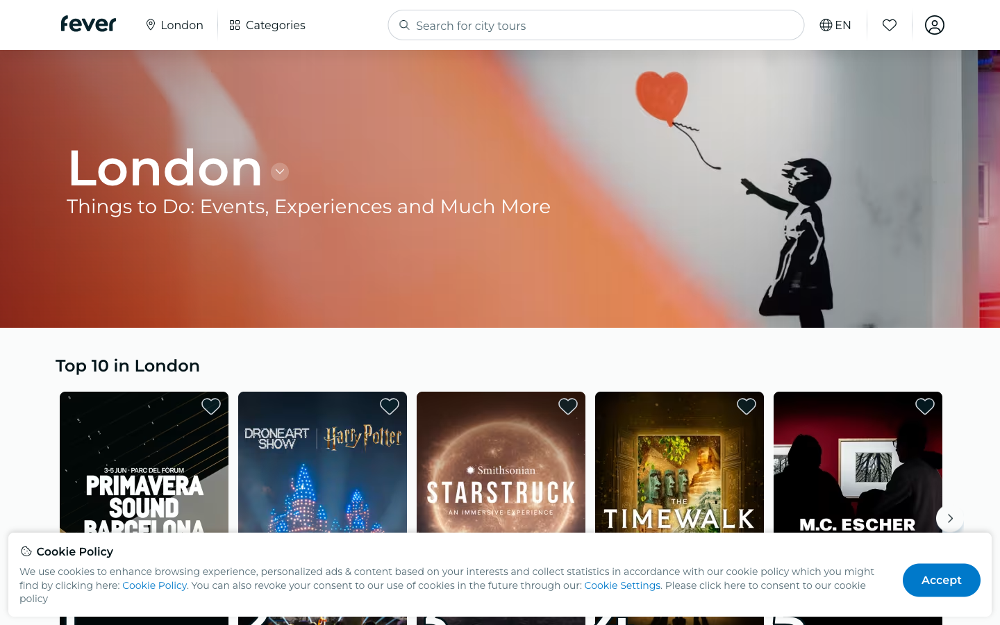
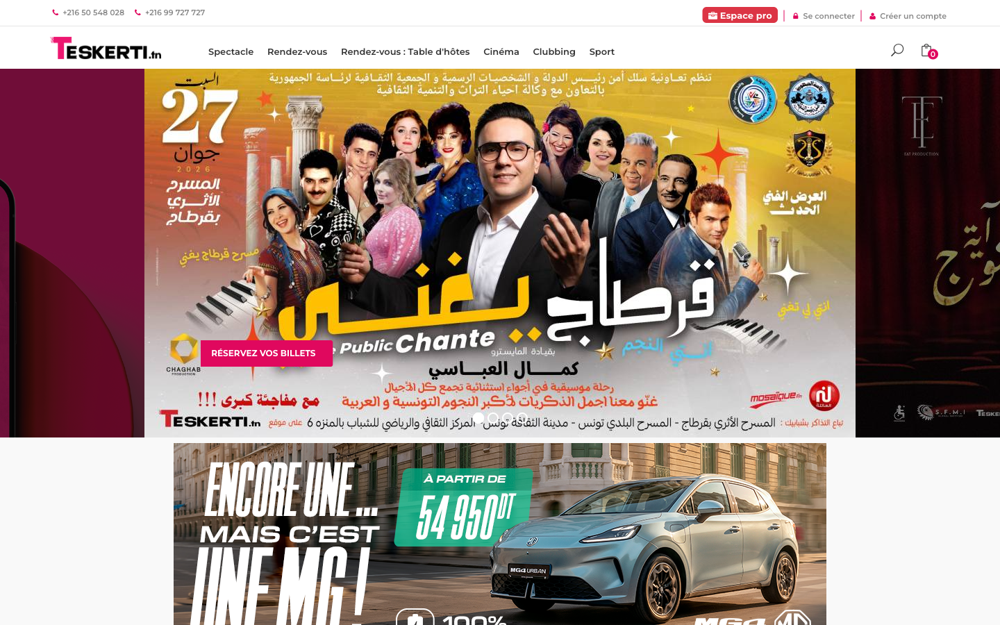
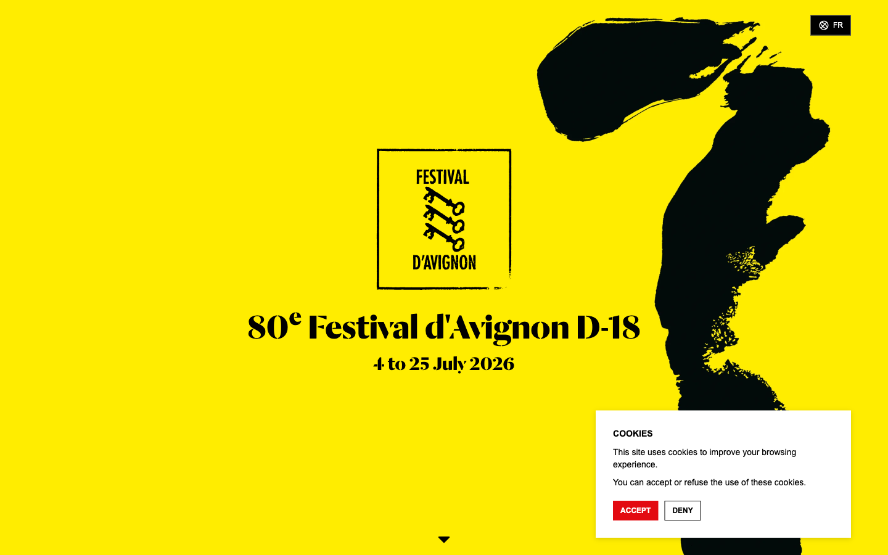

Culture · Restrained
Mubi (cold-minimal). Letterboxd leans here too.
Seven live captures (16 Jun 2026) across the four reference sets. Read the camps: film/ticketing aggregators play it muted or cluttered; culture/art brands go fearless. Swatches are sampled-by-eye from each capture. The takeaway map at the bottom is the real payoff — it shows the empty quadrant Tiween can own.







Plot the seven on two axes: vertical = utility ↔ culture (does it feel like a tool or a movement?) · horizontal = restrained ↔ loud. Almost everyone clusters in two corners. One corner is nearly empty.
Sally's read of the field:
1. Everyone safe goes poster/artwork-led dark. Letterboxd, Dice, Mubi all hide the UI and let images carry color. Tiween already does this — so doing it again is table stakes, not differentiation.
2. The brands that feel like CULTURE are loud. RA (fluoro yellow + clashing swatches) and Avignon (chrome-yellow field + ink) are unmistakable. Your punchy direction lands Tiween in the one quadrant film/events listings have left empty — culture-first AND loud.
3. The local bar is low. Teskerti is the cluttered-loud trap (loud by accident). Tiween's job isn't to out-shout it — it's to be loud on purpose, with a system (category color-coding) so it reads designed, not busy.
4. Interesting tension: the two loudest references (RA, Avignon) both center on YELLOW — the exact color you asked to substitute. Worth a beat: yellow may be more ownable in the culture space than I'd assumed. Tiween's #F8EB06 sits right between RA's #F4F408 and Avignon's #FFE600.
Recommendation: the references validate going punchy/culture-loud over the polite paper — specifically ③ Zellige or ② Tunis Pop, governed by a category color system (RA's discipline) so the loudness is wayfinding, not noise. And don't be too quick to kill yellow — the two strongest culture brands in this set are built on it.